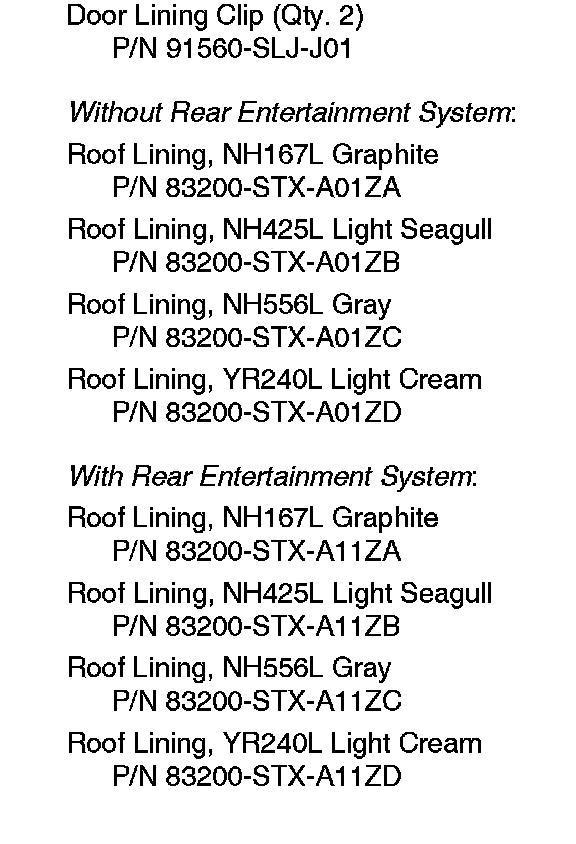
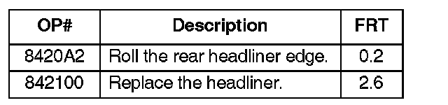
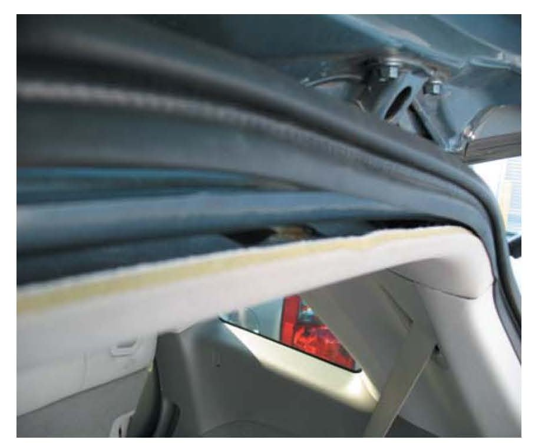
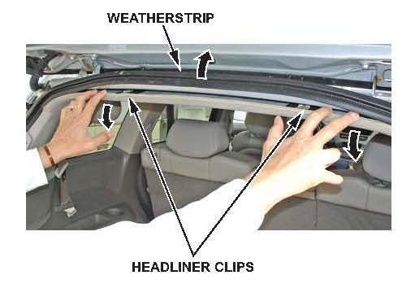
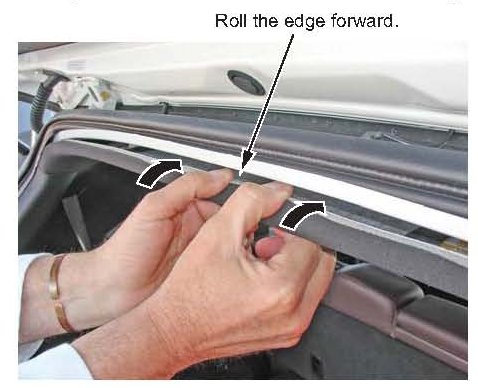

Interior - Gap Between Headliner/Liftgate Weatherstrip
08-009March 15, 2008
Applies To:
2007 MDX - ALL
2008 MDX - From VIN 2HNYD28. .8H500001 thru 2HNYD28..8H506382
Gap Between Headliner and Tailgate Weatherstrip
SYMPTOM
There is a gap between the headliner and the tailgate weatherstrip.
PROBABLE CAUSE
The rear lip of the headliner is rolled and not contacting the weatherstrip properly.
CORRECTIVE ACTION
Roll the rear edge of the headliner forward or, if needed, replace the headliner.

PARTS INFORMATION
WARRANTY CLAIM INFORMATION

In warranty:
The normal warranty applies.
Failed Part: P/N 83200-STX-A01ZA
Defect Code: 00401
Symptom Code: 02501
Skill Level: Repair Technician
Out of warranty:
Any repair performed after warranty expiration may be eligible for goodwill consideration by the District Parts and Service Manager or your Zone Office. You must request consideration, and get a decision, before starting work.
REPAIR PROCEDURE

1. Lift the top of the tailgate weatherstrip off the body flange to expose the rear edge of the headliner.

2. Release the two rear clips on the headliner by gently pulling straight down on the rear edge.

3. Roll the rear edge of the headliner forward to raise the edge of the headliner toward the weatherstrip.
4. Install two new door lining clips on the headliner. Reattach the headliner to the roof, then reinstall the weatherstrip on the body flange.
5. Inspect the rear of the headliner.
Does the weatherstrip lower lip overlap the headliner at least 1mm?
Yes - Return the vehicle to the client.
No - Go to step 6.
6. Replace the headliner:
^ Refer to page 20-101 of the 07-08 MDX Service Manual, or
^ Online, enter keyword HEADLINER, and select Headliner Removal/Installation from the list.

Disclaimer